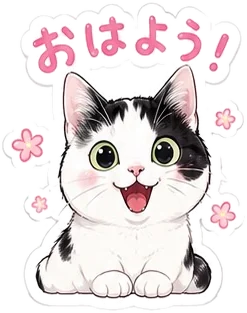
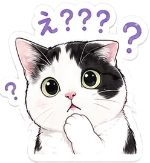
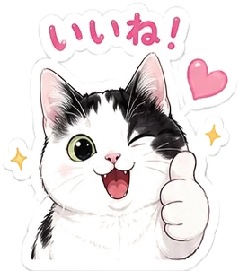
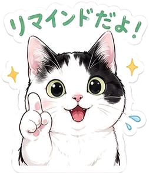
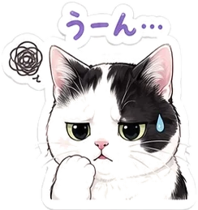
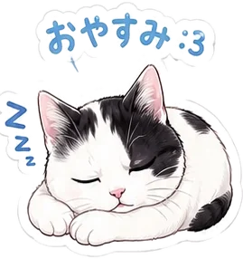

岩手県立大学 ソフトウェア情報学部 社会システムデザインコース
小倉研究室
人の考え方や行動のくせから，よりよい行動とコミュニケーションをデザインする．
「こんなモノが欲しかった」「これが知りたかった」と自分で思える研究を大切にしています．

技術からではなく，人間から考える
人は気分や状況で行動が変わるもの．その前提に立って問題を解きます．

生み出す・試す
新しい使い方を生み出す
- STEP 1見つける日常や社会の中の問題を発見する
- STEP 2つくる行動や考え方のくせに着目して，解決策を実装する
- STEP 3確かめる実験や調査で有効性を実証する
研究テーマは，やりたいことを聞いて一緒に相談して決めます．
研究テーマ
ほかにも，セキュリティ心理学（詐欺，ダークパターンなど）や教科「情報」に関する研究も対象です．
先輩の研究
カードを選ぶと，概要や発表資料を見られます．

2019年度以前の卒業研究は高田研究室（言語情報学講座）として指導しています．2022年度以前の卒業論文要旨へのリンクは掲載していません．
配属後の流れ

- 3年 前期チームでコンテストに挑戦
学生イノベーションコンテスト「SICHI」で，ガジェットを使った新しい体験を企画・実装し，学会でデモ発表します．
- 3年 後期自分の問いを見つける
インタビューや調査，プロトタイプづくりで卒業研究のテーマを固めます．研究日誌もここから．
- 4年卒業研究
ゼミで進捗発表と論文紹介．他の研究室の先生にも副指導に入ってもらいます．
3年前期チームの成果（SICHI（新しいタブで開きます））
3年生の演習の時間割を見る
| 曜日・時限 | 前期 前半（4〜6月） | 前期 後半 | 後期 |
|---|---|---|---|
| 火曜5限 | 所属研究室の演習 | 所属研究室の演習 | |
| 水曜2限 | — | ||
| 金曜5限 | 選択演習1 | 選択演習2 | — |
選択演習は，同じコース内の他の研究室の教員の演習から選びます．
研究室の方針

- まずはやってみる
やってみないとわからないことはたくさんある．教員が正しくないことも当然ある．
- 主体性を尊重する
可能な限りサポートします．ただし，自分で決めたことは投げ出さない．
- 卒論はラストチャンス
進学しないなら，好きなことができる最後の機会と思って．
- 考えたことを言語化する
Cosenseでメモを取り，ゼミでも使います．
研究室の様子
座席はフリー制で，普段は静かです．模様替えは大歓迎．

- 1教員
- 74年生
- 63年生
2025年度のメンバー
卒業生の進路（2020〜2024年度・学部）
大学院進学のうち1名はJAIST．修士修了生2名は就職．
研究用の機材
- VRヘッドセット
- GPU搭載PC
- 研究用スマホ
- ビデオカメラ
- 簡易脳波計
- 心拍モニタ
- 筋電センサ
- BITalino
- mocopi
- Kinect
- 簡易アイトラッカー
部屋にあるもの
- 55インチディスプレイ
- Fire TV Stick
- 予備モニター
- 冷蔵庫
- 電子レンジ
- 電気ケトル
- 雀卓
学外との交流
- JAIST 西本研究室
- NPO法人もりねこ
研究室配属について
まずは気軽に話しに来てください
実情は先輩に聞くのがいちばん．研究室に人がいそうなときは入ってOKです．配属戦略の相談も歓迎，複数人での相談もどうぞ．
- 研究室紹介期間に案内する相談可能日から，希望日時を2〜3個選ぶ
- メールで予約する（1人30分，複数人60分）
ogura_k@iwate-pu.ac.jp歓迎する人
身近な問題に「なぜだろう」「もっとこうできないか」と問いを持ち，試すことを楽しめる人．
くわしく見る
人や日常生活・社会の中の問題に興味があり，自分なりの問いを持って考え，試してみることを楽しめる人を歓迎します．プログラミング等の実装技術は，現時点の得意・不得意よりも，研究に必要な技術を主体的に学ぶ姿勢を重視します．
選考
面接はしません．希望者が多い場合は，成績・履修科目・研究室訪問状況で選考します．
くわしく見る
新3年生：成績（専門必修科目中心），履修科目（応用心理学，ヒューマンインタフェースの履修状況），研究室訪問状況をもとに選考します．
新4年生：3年次に本研究室に所属していたメンバーを優遇します．他研究室からの異動は必ず事前に相談してください．
履修しておくとよい科目
- ヒューマンインタフェース
- 情報環境論
- 応用心理学
- システムデザイン実践論
- システムデザインPBL